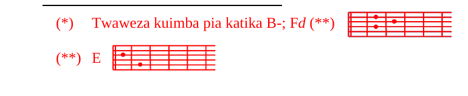

M.A-Ee Bwana, umenihaE (**)dhaa,
nami nimehadhA-aika.
Ulipambana E (**)nami, ukanisA-hinda.
Una nFguvu kuliko mimi, ukaniEweza.
M.A-Ninenapo napiga keE (**)lele:
dhuluma na uhariA-bifu.
Hivi, neno E (**)lako
kwangu ni shutumu na dhiA-haka.
NilEisema: sitamfikiri A-tena,
sitasema Etena kwa jina lA-ake.
Lakini moyoni E (**)mwangu
ulikuwemo moto uwakao
uliokimbia kaFtika mifupa yEangu.
K.A-Ee Bwana, umenihaE (**)dhaa, ...
M.E (**)Na ilaaniwe A-siku niliyozE (**)aliwa!
Na alaaniwe aliyemletea
baba yangu habari, akisema:
“Umezaliwa mtoto mwanaA-mume”.
Kwa E (**)nini nilitoka
tumboni mwa mama yangu
kuona tu taabu na huzuni?
CLakini Bwana yu pamoja Gnami
kama shujaa mwenye kuCtisha.
K.Lakini Bwana yu pamoja Gnami
kama shujaa mwenye kuCtisha.
M.A-Mwimbieni Bwana Etenzi,
msifuni jina lA-ake,
aliyeiFponya roho ya mhitaji Ehuyu!
